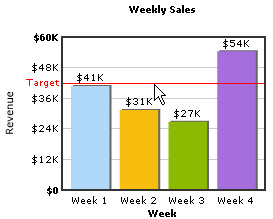
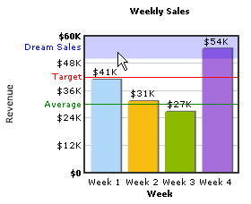

FusionCharts PHP Class API > Advanced Usage > Creating Trendlines |
Trendline is used to display trends, targets etc. on the chart. FusionCharts PHP Class lets you create trendlines on charts. Lets find out how: |
| addTrendLine() function of FusionCharts PHP Class lets you add a Trendline. Here is an example. |
| $FC->addTrendLine("startValue=44000;color=ff0000;displayvalue=Target"); |
| This function accepts delimiter separated trendline parameters - startValue, color of the line in hex color code, displayValue or label for the trendline etc. The resultant chart might look like this. |
|  |
| Similarly you can add a number of trendlines calling addTrendline() a number of times. |
| $FC->addTrendLine("startValue=42000;color=ff0000;displayvalue=Target;showOnTop=1"); $FC->addTrendLine("startValue=30000;color=008800;displayvalue=Average;showOnTop=1"); $FC->addTrendLine("startValue=50000;endValue=60000;color=0000ff;alpha=20;displayvalue=Dream Sales;showOnTop=1;isTrendZone=1"); |
| And the resultant chart is: |
|  |